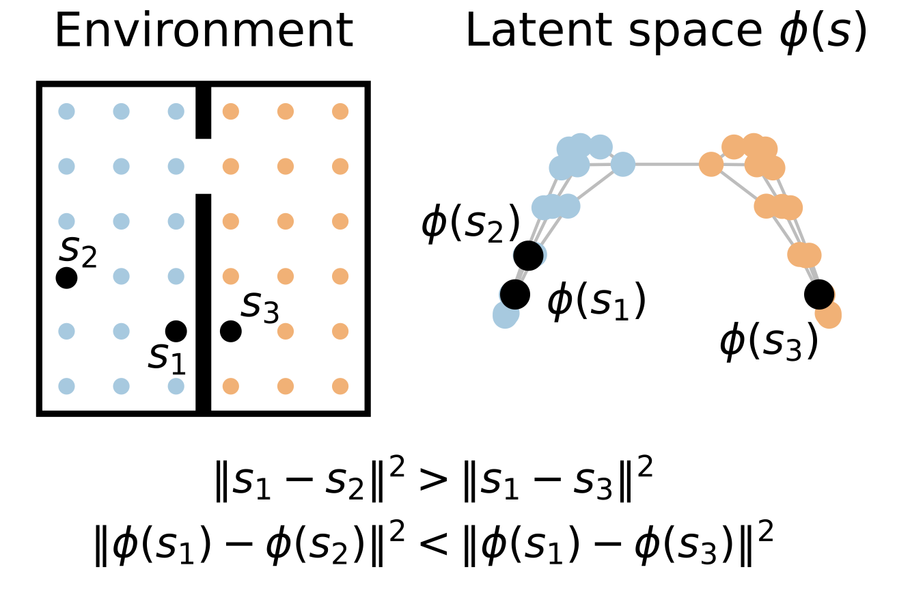
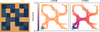
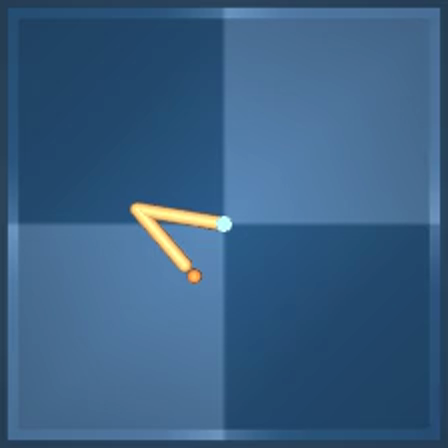
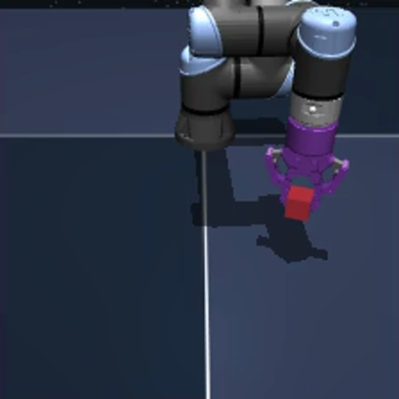
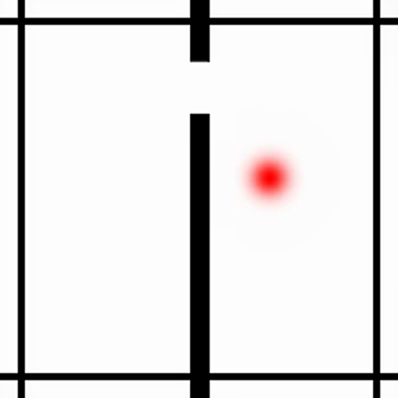
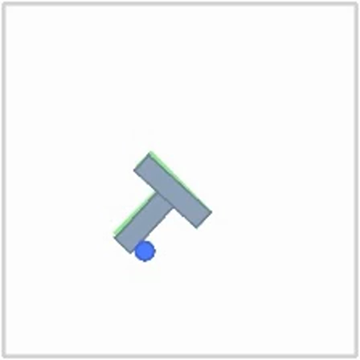
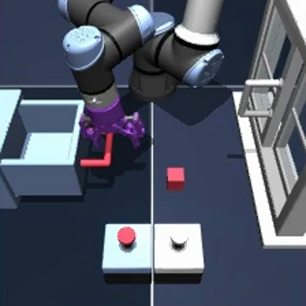
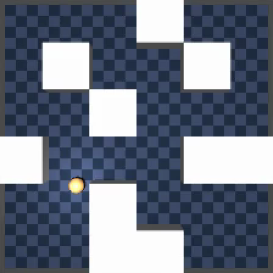

Learning Commute-Time-Preserving World Models for Planning
1Friedrich Miescher Institute for Biomedical Research, Basel, Switzerland 2Faculty of Science, University of Basel, Switzerland
*Equal contribution
World models allow agents to plan in latent space by choosing a sequence of actions that most reduces the distance to a given goal state. Thus, planning can benefit from latent representations whose distances mirror commute-times in the environment. The spectral embedding space of the graph Laplacian provides such a representation, if it obeys a specific eigenvalue-dependent scaling. Unfortunately, instantiating the graph Laplacian is intractable in large, continuous environments. Self-supervised learning offers a natural route to such commute-time-preserving embeddings at scale. However, here we show that existing methods, which commonly encourage isotropic representations to prevent representational collapse, tend to degrade the “correct” eigenvalue-dependent scaling, leading to an inaccurate representation of commute times. To address this problem, we introduce Commute-Time-Preserving World Models (CTWM), combining a latent displacement predictor and a log-determinant regularizer that prevents collapse, which provably recover the correctly scaled Laplacian representation under deterministic dynamics and at the predictor's fixed point. In numerical simulations, CTWM matches or outperforms LeWM, a task-agnostic baseline, on several complex, continuous goal-reaching benchmarks, while using half the parameters.
Goal-conditioned planning selects the action sequence minimising \(\lVert \phi(s_H) - \phi(g) \rVert^2\), the latent distance between the predicted terminal state and the encoded goal. The latent geometry must therefore reflect a temporal distance rather than the Euclidean distance in observation space. One such distance is the commute time \(C(s, s')\), the expected number of steps for a random walk to travel from \(s\) to \(s'\) and back, which ties the representation to the graph underlying the MDP.

An encoder \(\phi\) maps observations to latents; a predictor \(T\) models an action as a displacement, \(\phi(s') = \phi(s) + T(\phi(s), a)\). Both are trained jointly:
The penalty \(\beta\) forces the encoder to keep consecutive states close, while the log-determinant prevents collapse. Unlike other regularizers, it recovers not just the right eigendirections but the right scaling, so that
with \(C_d\) the truncated commute time on the transition graph.
The baseline throughout is LeWM, a task-agnostic world model trained end-to-end from pixels without reconstruction, using SIGReg to prevent collapse. CTWM inherits most of its architecture, and changes mainly the training objective. The implementation builds on the LeWM code release.

The structure of the configuration space is visible directly in the representation after applying PCA.
Success rate after ten epochs, three seeds per entry, planning with CEM in latent space. Goals are states a held-out demonstration reached a fixed number of steps later. The random policy is the floor for each setting and environment.
| Success rate | Reacher | Cube | Two-Room | PushT | Scene | PointMaze |
|---|---|---|---|---|---|---|
| Goal 25 steps, planning budget 50 steps | ||||||
| Random | 13.0 ± 2.3% | 45.2 ± 0.9% | 24.3 ± 2.7% | 4.3 ± 2.1% | 49.8 ± 3.1% | 14.3 ± 1.7% |
| LeWM | 83.3 ± 2.1% | 64.8 ± 1.3% | 88.8 ± 1.6% | 91.5 ± 1.1% | 69.3 ± 2.6% | 68.5 ± 1.8% |
| CTWM | 82.3 ± 2.6% | 89.8 ± 1.0% | 100.0 ± 0.0% | 92.2 ± 0.6% | 82.3 ± 1.4% | 100.0 ± 0.0% |
| Goal 100 steps, planning budget 125 steps | ||||||
| Random | 7.3 ± 1.9% | 45.5 ± 2.5% | 1.0 ± 0.4% | 0.3 ± 0.2% | 24.2 ± 1.7% | 11.3 ± 1.0% |
| LeWM | 81.0 ± 0.8% | 61.7 ± 1.4% | 17.3 ± 0.8% | 15.3 ± 1.4% | 40.3 ± 2.5% | 28.2 ± 1.2% |
| CTWM | 98.2 ± 0.8% | 73.0 ± 1.2% | 98.3 ± 0.9% | 26.5 ± 2.6% | 57.5 ± 1.6% | 98.8 ± 0.2% |
The gap widens with the goal distance: at 100 steps LeWM degrades sharply on the environments.
Rollouts in the harder setting: the goal is 100 steps ahead with a 125-step planning budget, rather than the usual 25/50. Examples where CTWM reaches the goal and LeWM does not.





